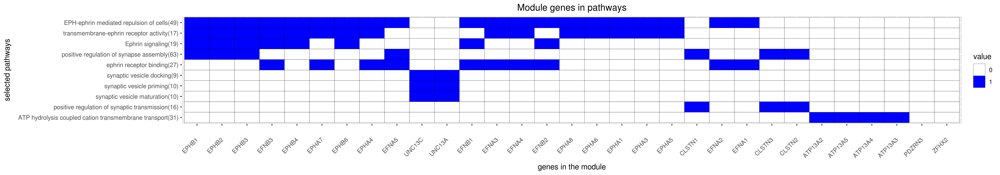

DREAM Module Identification Challenge – Consensus modules
PPI-STRING_Consensus_mod107
| Assigned name |
NA |
| Network |
PPI-STRING |
| Module ID |
PPI-STRING_Consensus_mod107 |
| Module size |
32 genes |
|
Module genes
This module comprises the following genes:
| Gene ID |
Gene Symbol |
Gene Name |
| 23400
|
ATP13A2
|
ATPase cation transporting 13A2
|
| 79572
|
ATP13A3
|
ATPase 13A3
|
| 84239
|
ATP13A4
|
ATPase 13A4
|
| 344905
|
ATP13A5
|
ATPase 13A5
|
| 22883
|
CLSTN1
|
calsyntenin 1
|
| 64084
|
CLSTN2
|
calsyntenin 2
|
| 9746
|
CLSTN3
|
calsyntenin 3
|
| 1942
|
EFNA1
|
ephrin A1
|
| 1943
|
EFNA2
|
ephrin A2
|
| 1944
|
EFNA3
|
ephrin A3
|
| 1945
|
EFNA4
|
ephrin A4
|
| 1946
|
EFNA5
|
ephrin A5
|
| 1947
|
EFNB1
|
ephrin B1
|
| 1948
|
EFNB2
|
ephrin B2
|
| 1949
|
EFNB3
|
ephrin B3
|
| 2041
|
EPHA1
|
EPH receptor A1
|
| 2042
|
EPHA3
|
EPH receptor A3
|
| 2043
|
EPHA4
|
EPH receptor A4
|
| 2044
|
EPHA5
|
EPH receptor A5
|
| 285220
|
EPHA6
|
EPH receptor A6
|
| 2045
|
EPHA7
|
EPH receptor A7
|
| 2046
|
EPHA8
|
EPH receptor A8
|
| 2047
|
EPHB1
|
EPH receptor B1
|
| 2048
|
EPHB2
|
EPH receptor B2
|
| 2049
|
EPHB3
|
EPH receptor B3
|
| 2050
|
EPHB4
|
EPH receptor B4
|
| 2051
|
EPHB6
|
EPH receptor B6
|
| 23024
|
PDZRN3
|
PDZ domain containing ring finger 3
|
| 29951
|
PDZRN4
|
PDZ domain containing ring finger 4
|
| 23025
|
UNC13A
|
unc-13 homolog A
|
| 440279
|
UNC13C
|
unc-13 homolog C
|
| 85446
|
ZFHX2
|
zinc finger homeobox 2
|
|
Functional annotation
Modules were tested for enrichment in functional and pathway annotations using two complementary approaches:
1. To select a small number of specific / non-redundant annotations for each module, a regression-based approach was used;
2. To obtain the complete set of enriched annotations, an extension of Fisher’s exact test that takes annotation bias into account was employed (Wallenius’ non-central hypergeometric distribution).
Most specific annotations for this module
1Regression coefficient
2Fisher’s exact test nominal P-value
3Annotation source (Reactome, GO biological process (BP), molecular function (MF) and cellular component (CC))
4GO category or Reactome pathway
5High-level branch of annotation tree
Gene membership

All enriched annotations
Gene Ontology
11Nominal enrichment p-value (Wallenius’ noncentral hypergeometric distribution)
2FDR corrected p-value (Benjamini-Hochberg)
Mouse mutant phenotypes
11Nominal enrichment p-value (Wallenius’ noncentral hypergeometric distribution)
2FDR corrected p-value (Benjamini-Hochberg)
Generated on: Thu Aug 23 09:49:41 2018 - R2HTML